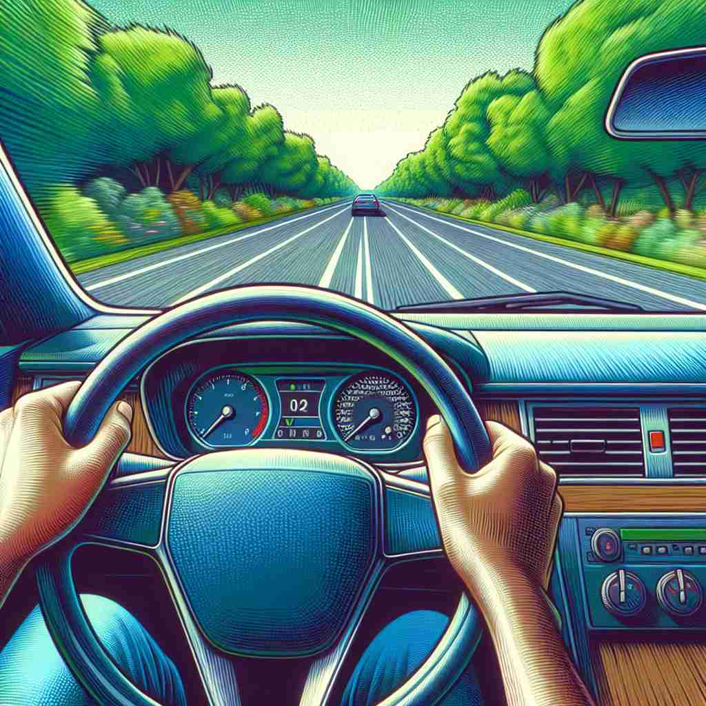

💬 The man is ready to drive the car through the busy street.

💬 The girl is excited to drive the tractor across the field.
💬 The driver needs to drive a bus carefully in the busy street.

💬 He loves to drive a car on sunny days.
🔈 [draɪv]
🗝️ v. to control and guide the movement of a vehicle
🖼️ 在一个繁忙的城市街道上，一位司机正专注地握着方向盘。他熟练地在车流中穿梭，展示了‘drive’的核心含义：控制和引导车辆的移动。
🔍 想象你在驾驶（drive）一辆车，你控制它的方向和速度。这个核心概念可以帮助你理解'drive'的其他含义：无论是推动物体、激励他人、操作机器，还是在体育运动中击球，都可以联想到驾驶时的控制和推进动作。名词形式则可以想象为驾驶的结果（行程）或驱动力本身。通过这个驾驶的意象，你可以更容易地记住和理解'drive'的多重含义。
💬 The man is ready to drive the car through the busy street.
💬 The girl is excited to drive the tractor across the field.
💬 The driver needs to drive a bus carefully in the busy street.
💬 He loves to drive a car on sunny days.
🌳 词根 'drive' 源自古英语 'drīfan'，意为推动或驱动。它本身就是一个完整的词，表示驾驶、驱使等。
💡 可以将 'drive' 联想为推动动力或行动的源头，通过想到汽车的驱动功能来记住这个单词的含义。
🗝️ v. to force something or someone to move in a particular direction
🖼️ 在一个牧场上，牧羊人用牧羊犬巧妙地将羊群驱赶向草地的另一边。这种‘drive’表现为强迫某物或某人朝某个方向移动。
💬 The wind drove the leaves across the yard.
❓ 类似于控制车辆移动，但应用于其他对象
🗝️ v. to motivate or compel to act in a certain way
🖼️ 在一个公司会议上，经理正在激励团队完成一个关键项目。他强调业务增长的潜力，并敦促大家努力工作，体现了‘drive’作为动机或激励他人以特定方式行动的意义。
💬 His ambition drives him to work hard.
❓ 像驾驶车辆那样推动或引导某人的行为
🗝️ v. to operate or control a machine
🖼️ 在一个现代化工厂中，技术员在控制面板上操作复杂的生产机器。他小心翼翼地调整设置，展示了‘drive’作为操作或控制机器的涵义。
💬 This software drives the printer.
❓ 扩展自驾驶车辆的概念，应用于其他机器
🗝️ v. to hit or propel with force (in sports)
🖼️ 在绿茵球场上，一名高尔夫球手全神贯注地挥动球杆，用力击打高尔夫球，将其远远推向草坪。这次‘drive’显示出体育运动中用力击打的含义。
💬 He drove the ball into the net.
❓ 像驾驶车辆向前那样用力推动球
🗝️ n. a trip in a vehicle
🖼️ 在一个春暖花开的周日，家庭成员们决定开车去郊游。孩子们在车后座兴奋地讨论着行程中的趣事，这次愉快的‘drive’就是一次车辆里的旅行。
💬 Let's go for a drive in the countryside.
❓ 由驾驶行为引申为行程本身
🗝️ n. a strong motivation or urge
🖼️ 在一场学术颁奖典礼上，教授表扬了一位学生的研究成果。教授提到，正是这位学生对知识的强烈渴求和努力驱动（‘drive’）造就了今天的成就。
💬 She has a drive to succeed in her career.
❓ 从驱动车辆的力量引申为内在动力